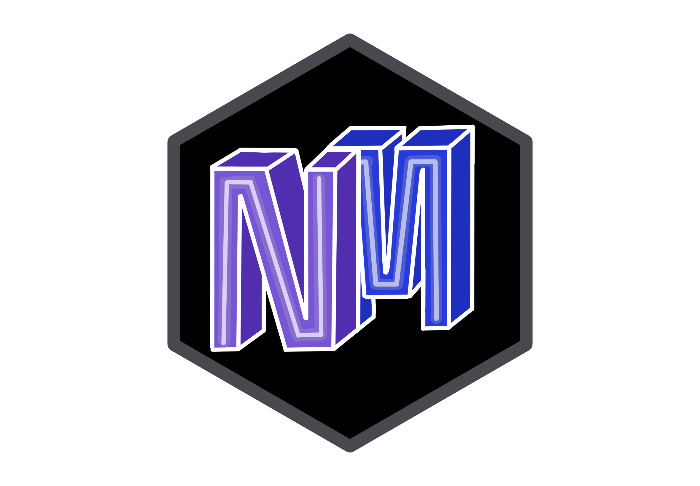
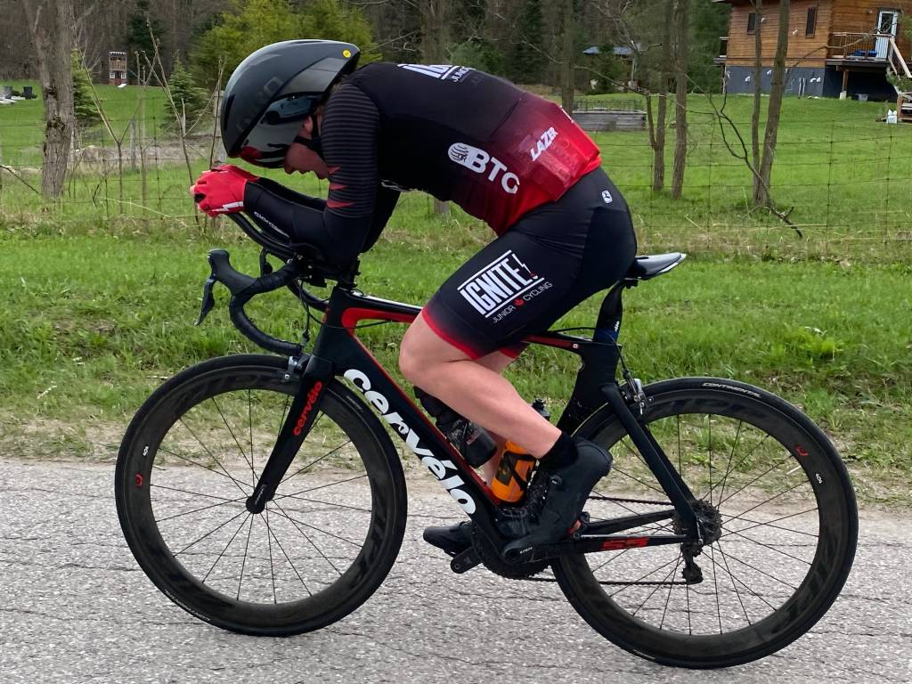
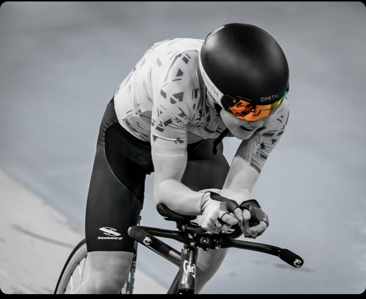

About Me
From technical projects to personal pastimes, this page highlights the interests that keep me engaged, curious, and well-rounded.

Academics & Professional Interests
As a Software Engineering student at the University of Waterloo, I'm pursuing a Specialization in Artificial Intelligence, Joint Honours in Combinatorics and Optimization, and a Physics Option. Through my past co-ops, I've gained valuable experience in software development and am eager to take on future internships that contribute to impactful systems and support ongoing research efforts.
Cycling
I was fortunate to be a member of two of Canada's top junior cycling teams—Toronto Hustle and Ignite Junior Cycling—where I trained and raced alongside many of the country's most talented young cyclists. Competing in high-level road and track races across Canada, USA, and Western Europe, I gained invaluable experience on the national and international stage, including Nation Cups and other top-level UCI Junior races. Podiums at Provincial and National Championships were meaningful milestones, but even more impactful were the lessons in discipline, teamwork, and resilience that came from balancing training, travel, and competition at a high level. Cycling taught me how to lead, how to adapt, and how to persevere—skills that continue to shape my personal and professional growth.


Other Hobbies
Outside of academics and cycling, I enjoy activities that challenge both the body and the mind. Rock climbing, both top rope and bouldering, has become a favourite of mine over the last few years, for its mix of physical technique and unique problem-solving requirements. I also enjoy working through and learning about puzzles like Rubik's Cubes. I've been drawn to the underlying logic, structure, and learning process. I've been especially drawn to mastering new solving methods, such as blindfolded solving, and optimizing efficiency through more advanced algorithms.